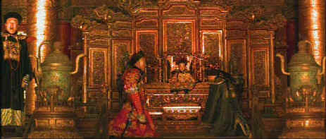

Artisan/1987/218m/WS 2.35/$29.95
 |
Amazing prodution design dominates The Last Emperor ©Artisan |
From the amazing spectacle of the coronation of
Pu Yi to his youthful reign on the Peacock Throne, the scenes within the walls of the
Forbidden City are breathtaking. Bit by bit Bertolucci builds a picture of what drove Pu
Yi to accept puppet Manchurian rule under the Japanese. The overpowering sadness of Pu
Yi’s existence belies the incredible luxury that surrounds him. The Forbidden City,
infested by the centuries old corruption of the eunuchs, breeds a streak of depravity into
the young emperor that taints everything he touches as he comes to manhood. As the Old
World crumbles around the young man, the awareness of the mission in life that he will
never fulfill is a torture that he must endure. Virtually a prisoner in The Forbidden
City, he is even prevented from going to the funeral of his mother.
There are really three or four stories that weave together to
make up The Last Emperor. The free-flowing Bertolucci moves between the years of
Communist captivity and indoctrination to the early years of a boy finding himself. The
imprisoned Pu Yi remembers the years leading up to his betrayal of the Chinese people and
the Japanese occupation. The modern and Western aspects of these years of mature decadence
are elegantly contrasted with the cold hard existence of Communist prison. The years under
the tutelage of Englishman Reginald Johnston are recalled with a fondness for the
sophistication that was awakened in the young man.
John Lone is well cast as Emperor Pu Yi. Lone plays decadent and
imperious very well, yet captures a sense of tragedy about his character. Joan Chen plays
Pu Yi’s wife Wan Chan with amazing style. The fragile Chen decays like a beautiful
flower left too long in the vase. Peter O’Toole plays Reginald Johnston with a
wide-eyed stiffness that works well, yet the performance fails to make Johnston come to
life.
The Last Emperor is produced with startling power.
Production design is nothing short of spectacular. The settings provide a magnificent
opportunity for Ferdinando Scarfiotti and Vittorio Storaro’s cinematography is regal.
The original music by David Byrne, Ryuichi Sakamoto and Cong Su marries perfectly with the
magnificence of the imagery.
The DVD appears to have been struck from a composite transfer.
The Forbidden City is "Artifact City." The many straight edges and details are
jumping all over the place. Some scenes are slightly soft, but the overpowering element of
this DVD is shimmering, moiré and incessant edge jitter. My review system includes a
six-foot by eleven-foot screen. Large screens emphasize some visual problems more than
others. Viewing on a smaller monitor may reduce the artifact impact to a degree. The
varied lighting schemes of cinematographer Vittorio Storaro are maintained faithfully. The
muddy blue/green tones of the Communist confinement period are cold and flat, while the
early moments of Pu Yi’s introduction to the Forbidden City are bathed in a magic
light of reds and oranges. The Last Emperor is magnificent entertainment tarnished
by a less than acceptable transfer.